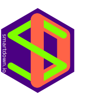

I may have given you a Smartdown Logo sticker in some random pub, coffee shop, or meeting; or you may have found your way to this site via some other link. If you want to contact me, email me at smartdown@quantumclay.com or check out my blog and resume/CV at https://doctorbud.com.
Smartdown
Less Syntax, More 'Splainin'
Use Smartdown technology to more easily create scientific, technical, mathematical and artistic articles that are expressive, interactive, and rich with diverse content types.
Turns this …

…Into this

Smartdown Viewer and Gallery
Demonstrations, Possibilities, Examples
The Smartdown Viewer Site is an example application that can view Smartdown documents as well as showing their raw Smartdown text. The Viewer provides a rich set of example from the Smartdown Examples Gallery.
It is very basic and based on AngularJS and CodeMirror, but it provides a useful way to view the Smartdown source side-by-side with its rendering. The source code may provide inspiration for other Smartdown integrations.
Smartdown Core Library
For Developers and Integrators
smartdown - A Javascript library for translating, rendering, and interacting with Smartdown documents.
The core of any Smartdown integration includes the Smartdown Javascript library and associated resources.
Smartdown Integrations
Smartdown is like Cheese! You can put stuff in it, and you can put it in stuff.
- Dan Keith, December 2018
For examples how Smartdown may be embedded into other systems, and how other systems can be embedded in Smartdown, consider the following:
- Slideshows via Impress.js
- Smartdown on Glitch
- Smartdown on Solid
- Smartdown on GitHub Gists
- Smartdown Posters
- Smartdown on bl.ocks.org
- WildThinks uses Smartdown to explore and present mathematical concepts in an engaging and interactive format.
- … and much more!
About the Smartdown Logo
The Smartdown Logo above was developed using Smartdown and explained in the blog post(s) below: